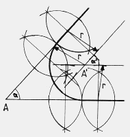
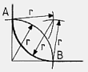
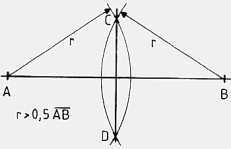
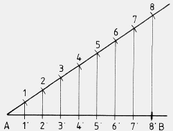
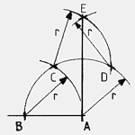
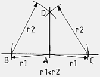
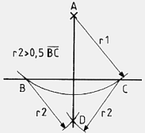
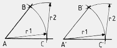
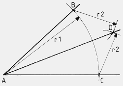
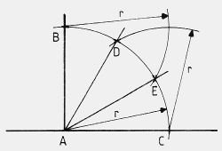

Alle beschriebenen Konstruktionen können mit Zirkel, Lineal und einem Stift nachvollzogen werden. Die hier aufgeführten Konstruktionen sind teilweise miteinander kombinierbar. Die Eine oder Andere der Konstruktionen, wie zum Beispiel die "gleichmäßige Aufteilung einer Strecke", ist als Bestandteil in einer anderen Zeichnung wiederzufinden. Ist dieser Umstand für eine der Konstruktionen erheblich, wird darauf durch Verlinkung hingewiesen!
Bitte den Spezialfall des rechten Winkels zu beachten! Der Winkel α, im Punkt A liegend, ist vorgegeben. Auf beiden Schenkeln des Winkels werden je zwei Punkte festgelegt, für die hernach die Senkrechten konstruiert werden. Auf diesen wird der erwünschte Radius r abgetragen, und die gefundenen Punkte pro Schenkel so verbunden, daß die Geraden sich im Punkt A' kreuzen. Punkt A' ist der Mittelpunkt des Radius r.
Dies ist ein Spezialfall eines Radius in einem Winkel, der eine einfachere Herangehensweise als im nichtrechtwinkligen Winkel ermöglicht. Zuerst wird je ein Punkt auf den Schenkeln des Winkels in gleichem Abstand zur Winkelspitze mit einem Bogenschlag mit dem Radius r abgetragen. Von den dabei entstehenden Punkten A und B aus wird widerum mit dem Radius r der rechte Winkel halbiert. Im Schnittpunkt, der dabei entsteht, befindet sich der Mittelpunkt des Bogens, mit dem der rechte Winkel ausgerundet wird.
Mit zwei Bogenschlägen mit r > 1/2 AB, von den Punkten A und B ausgehend, werden die Kreuzungspunkte C und D konstruiert. Durch sie hindurch führt die Senkrechte, die die Strecke AB halbiert. Die Umkehrung dieser Konstruktion ist die Senkrechte auf Punkt der Strecke. Ebenfalls wichtig ist diese Konstruktion bei der Konstruktion des Kreises um das Dreieck.
Mit dieser Methode, eine Strecke gleichmäßig zu teilen, können Teilungen realisiert werden, die zum Beispiel mit dem Lineal nicht genau genug vorgenommen werden können. Für diese Konstruktion benötigt man im Normalfall Lineal und Dreieck oder zwei Dreiecke. Die Strecke AB soll in diesem Beispiel in acht Achtel geteilt werden. Zu diesem Zweck wird von Punkt A aus ein Strahl in beliebigem Winkel gezeichnet. Hier wurde er so gezeichnet, daß die Linien, welche die Punkte auf die Strecke AB übertragen, senkrecht zu der Strecke stehen, aber bitte nicht täuschen lassen, ein anderer Winkel des Strahls zur Strecke, und schon sieht das Bild anders aus! Beispiel hier! Mit einem Zirkel, Lineal oder Dreieck wird der Strahl nun in acht gleichmäßig große Teile unterteilt. Bei Verwendung eines Zirkels ist die Größe der mit ihm gegriffene Spanne eigentlich unerheblich. Mit dem Lineal oder Dreieck wird eine reproduzierbare Spanne, zum Beispiel ganze Zentimeter, benutzt. Aber für beide Werkzeuge gilt: die Spanne sollte nicht so groß oder klein sein, daß ein Übertragen der Punkte durch zu spitze Winkel behindert wird. Sind alle acht Punkte auf dem Strahl abgetragen, wird der letzte Punkt, hier Punkt 8, mit dem Ende der Strecke, mithin Punkt B, verbunden. Achtung! Die Punkte B und 8' sind identisch! Von der Strecke 8 8' aus werden die anderen Punkte des Strahls mittels der Parallelverschiebung auf die Strecke AB übertragen. Und genau dazu braucht man das zweite Lineal oder Dreieck. Sind alle Punkte (1'-8') auf die Strecke AB übertragen, ist diese in acht gleichgroße Abschnitte unterteilt.
Punkt A gilt als Endpunkt der Strecke. Willkürlich wird Punkt B auf der Strecke markiert. Die Strecke AB ist gleich dem Radius r. Mit einem Bogenschlag von etwa 120° wird die Basis zur Konstruktion der Senkrechten gelegt. Von Punkt B aus wird auf dem ersten Bogen eine Markierung, Punkt C, angebracht, von welcher aus ein weiterer Bogenschlag von fast senkrecht über Punkt C bis auf den ersten Bogen erfolgt. Dabei entsteht Punkt D, der als Mittelpunkt des vierten und letzten Bogens dient, aus dem sich Punkt E ergibt, der senkrecht über Punkt A steht. Durch die Verbindung der Punkte A und E entsteht die gesuchte Senkrechte.
Dies ist die faktische Umkehrung der Halbierung einer Strecke. Hier müssen zuerst, von Punkt A aus, zwei Punkte, hier B und C, auf der Strecke konstruiert werden. Dies geschieht mittels des Zirkels mit dem Radius r1. Mit dem Radius r2, der größer sein muß als r1, wird nun, von den Punkten B und C aus, je ein Bogen so geschlagen, daß sie sich kreuzen. Dies ist Punkt D, der senkrecht über Punkt A steht. Auch die folgende Konstruktion erfolgt nach dem gleichen Schema.
Auch bei dieser Konstruktion werden, wie bei der vorhergehenden, als erstes mit r1 auf der Strecke zwei Punkte, hier B und C, markiert. Dies erfolgt vom Punkt A aus. Von den beiden ersteren Punkten wird mit r2 je ein Bogen geschlagen, wobei sich Punkt D ergibt. Dieser liegt senkrecht unter Punkt A. Durch Verbindung der Punkte A und D mittels des Lineals erhält man die gesuchte Senkrechte.
Tja, die Zeichnug sieht nicht gerade aufregend aus, oder? Die ganze Sache ist auch eher einfach. Gegeben ist der Winkel ABC, allerdings gibt es die Punkte B und C eigentlich noch gar nicht. Von der Kopie existiert vorerst nur die Grundlinie mit dem Punkt A'. Am Originalwinkel wird mit dem Radius r1, von Punkt A aus, ein Bogen geschlagen, der beide Schenkel des Winkels kreuzt. Hier erst entstehen die Punkte B und C. Nun wird dieser Bogen auch an der Grundlinie der Kopie ausgeführt, wobei Punkt C' entsteht. Der Bogen an der Kopie muß natürlich bis etwas über den vermuteten Standort des Punktes B' reichen. Jetzt wird die Spanne zwischen B und C mit dem Zirkel abgegriffen, die gleichbedeutend mit r2 ist. Vom Punkt C' der Kopie aus wird mit r2 ein Bogen geschlagen, der den Bogen mit r1 kreuzt. Dabei entsteht der Punkt B'. Verbindet man nun die Punkte A' und B', ist die Kopie des Winkels vollständig.
Die Halbierung eines Winkels beginnt mit einem Bogen, von Punkt A aus, mit dem Radius r1, der biede Schenkel des Winkels kreuzt. Von den beiden entstehenden Punkten B und C aus wird mit dem Radius r2 je ein Bogen geschlagen. Die beiden letzteren Bögen ergeben an ihrem Kreuzungspunkt den Punkt D. Verbindet man die Punkte A und D, ist der Winkel halbiert. Eine Weiterführung dieser Konstruktion ist die Drittelung eines rechten Winkels. Auch im Zusammenhang mit Kreiskonstruktionen zu verwenden.
Vom Punkt A aus wird mit dem Radius r ein Bogen geschlagen, der beide Schenkel des Winkels kreuzt. Von den dabei entstehenden Punkten B und C aus wird mit dem gleichen Radius je ein Bogen geschlagen, der den ersten Bogen kreuzt. Auf dem ersten Bogen entstehen die Punkte D und E, die, verbunden mit Punkt A den rechten Winkel dritteln. Werden die Bögen von den Punkten B und C soweit gezogen, daß sie auch sich kreuzen, kann der Winkel ebenfalls halbiert werden. Siehe dazu auch den Radius im rechten Winkel. Bei genauem Hinschauen offenbart sich, daß die Drittelung des rechten Winkels einem Viertel eines Zwölfecks, und die Halbierung einem entsprechenden Teil eines Achtecks entspricht.